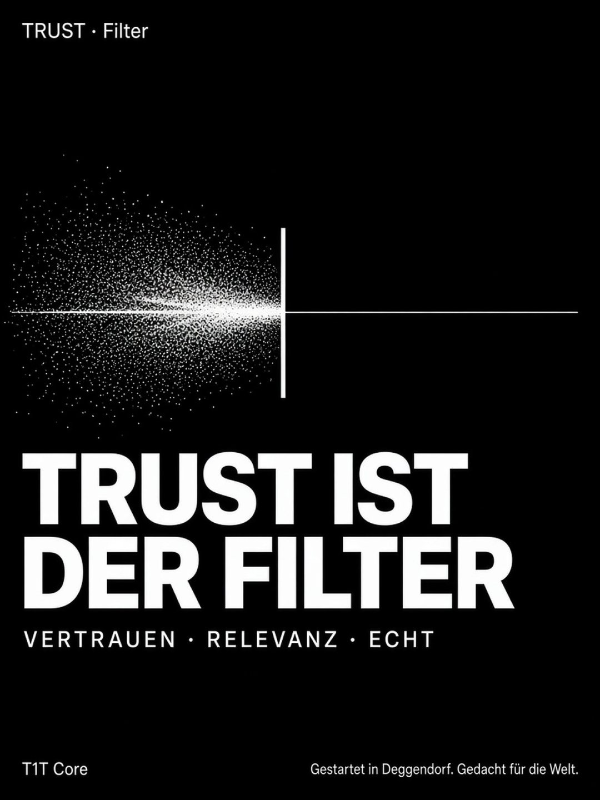

VERTRAUEN
Hält, was versprochen wird.
Great T1T RESET
Wischen oder scrollen
KERN VERTRAUEN RELEVANZ ECHT
T1T Core
Gestartet in Deggendorf. Gedacht für die Welt.
KERN
Alles auf Null. Dann bleibt das Signal.
Wir hören durch das Rauschen. Drei Stufen. Ein Ergebnis: der T1T SCORE.
Hält, was versprochen wird.
Trifft, was jetzt gebraucht wird.
Stimmt innen und außen überein.
ERGEBNIS
In T1TCORE steckt SCORE.
Drei Stufen. Ein Wert. Klar und sichtbar.
Beispiel
Tippen für ein Beispiel
NIKI
Der Mensch hat das letzte Wort.
RAUM
Für Unternehmen, Selbstständige und Marken im Raum Deggendorf.
Gestartet in Deggendorf. Gedacht für die Welt.
AKTUELL AUF X

Plattformen kennen deine Trigger besser als du dich selbst. Aber Vorhersage ist nicht Verständnis. Signal ist das, was dir dient. Rauschen das, was dich bindet. TRUST ist der Filter dazwischen. Bild KI-generiert. #T1TCore #SignalStattRauschen
Auf X lesenOhne X-Skript. Der Text liegt auf dieser Seite. Der Link führt zu X.
Ein kurzes Schreiben reicht.
Kontakt über X